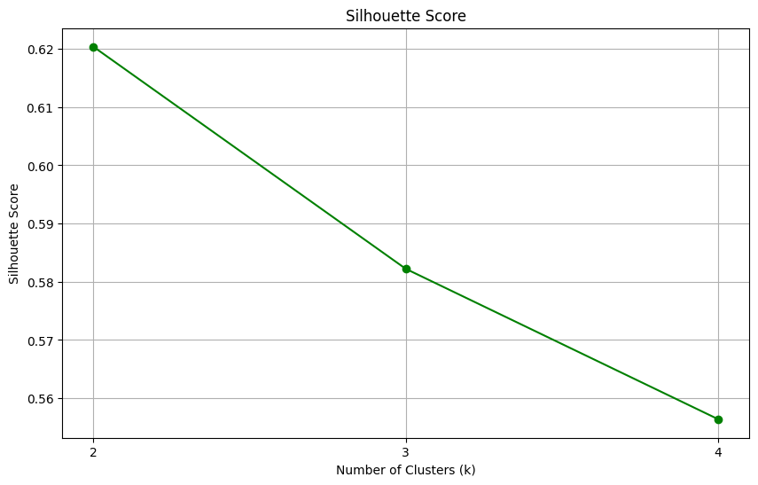
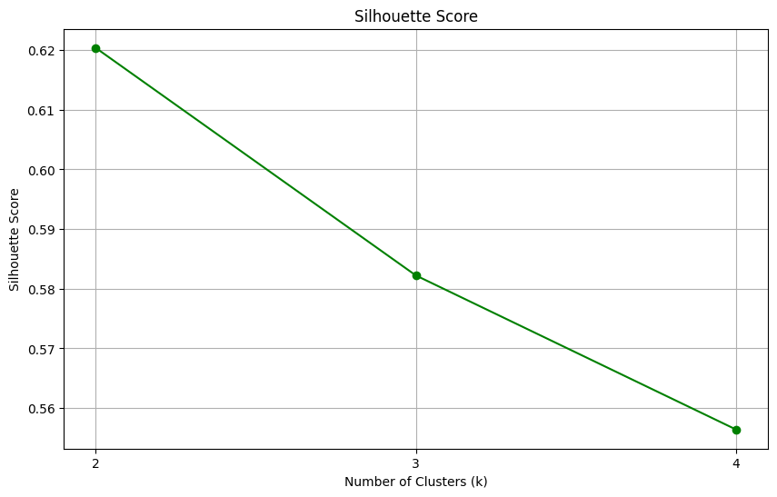

K-Mean#
K-Means adalah algoritma unsupervised learning yang digunakan untuk clustering atau pengelompokan data. Artinya, K-Means digunakan untuk membagi kumpulan data ke dalam beberapa kelompok (klaster) berdasarkan kemiripan antar data tanpa perlu label atau target output.
Tujuan dan Fungsi#
🯠Tujuan K-Means#
Mengelompokkan data ke dalam sejumlah klaster (K) sedemikian rupa sehingga:
Data dalam satu klaster memiliki kemiripan tinggi (homogen)
Data antar klaster berbeda satu sama lain (heterogen)
Meminimalkan inersia (jumlah kuadrat jarak data ke pusat klasternya)
Dengan kata lain, K-Means bertujuan untuk menemukan struktur tersembunyi dalam data dan membantu memahami pola atau segmentasi dalam kumpulan data yang besar.
ğŸ› ï¸ Fungsi K-Means#
Clustering (Pengelompokan) Data Mengelompokkan objek yang serupa ke dalam klaster, tanpa perlu label atau kategori sebelumnya.
Reduksi Dimensi Visualisasi Meski data berdimensi tinggi, hasil K-Means bisa direduksi dan divisualisasikan (misalnya dengan PCA).
Segmentasi Pasar atau Pengguna Contoh: membagi pelanggan menjadi beberapa grup berdasarkan perilaku pembelian.
Inisialisasi Model Lain K-Means kadang digunakan untuk inisialisasi parameter dalam algoritma lain seperti GMM (Gaussian Mixture Models).
Deteksi Pola dan Anomali Klaster yang sangat kecil atau data yang jauh dari centroid bisa dianggap sebagai outlier/anomali.
Pengelompokan Citra atau Warna Dalam pengolahan citra, K-Means bisa digunakan untuk segmentasi warna.
Langkah-langkah Algoritma K-Mean#
Tentukan Jumlah Klaster (K)
pada penjelasan ini akan mencoba membagi data menjadi K = 2, 3, 4 klaster.
Inisialisasi Centroid (Titik Pusat Klaster Awal)
Pilih K titik awal (centroid) secara acak dari data atau dari titik tertentu. Setiap klaster memiliki 1 cenroid
Hitung Jarak dari Setiap Titik ke Semua Centroid
Gunakan rumus jarak Euclidean:
Tentukan Klaster Tiap Titik
Tiap titik akan dimasukkan ke klaster terdekat (jarak terkecil ke centroid).
Update Centroid
Hitung ulang centroid (rata-rata semua titik dalam satu klaster):
Ulangi Langkah 3–5 Sampai Konvergen Iterasi terus sampai:
Tidak ada perubahan klaster,
Atau perpindahan centroid sangat kecil,
Atau mencapai jumlah iterasi maksimum.
!pip install pymysql
Collecting pymysql
Downloading pymysql-1.1.2-py3-none-any.whl.metadata (4.3 kB)
Downloading pymysql-1.1.2-py3-none-any.whl (45 kB)
?25l ━━━━━━━━━━━━━━━━━━━━━━━━━━━━━━━━━━━━━━━━ 0.0/45.3 kB ? eta -:--:--
━━━━━━━━━━━━━━━━━━━━━━━━━━━━━━━━━━━━━━━━ 45.3/45.3 kB 3.8 MB/s eta 0:00:00
?25h
Installing collected packages: pymysql
Successfully installed pymysql-1.1.2
Menampilkan data iris#
import pymysql
from decimal import Decimal
from tabulate import tabulate
# Konfigurasi koneksi ke database Aiven MySQL
host = "mysql-11e88817-k-mean-irismysql23-112.h.aivencloud.com"
user = "avnadmin"
password = "AVNS_p42y2Yfz3VGZmaWCpvs"
database = "defaultdb"
port = 26858
try:
# Koneksi ke database MySQL
conn = pymysql.connect(host=host, user=user, password=password, database=database, port=port)
cursor = conn.cursor()
print("Koneksi MySQL berhasil!")
# Menjalankan query untuk mengambil data dari tabel `mysqliris` dalam schema `iris`
cursor.execute("SELECT id, Sepal_Length, Sepal_Width, Petal_Length, Petal_Width FROM `mysqliris`.`iris`;")
rows = cursor.fetchall()
# Ambil nama kolom
column_names = [desc[0] for desc in cursor.description]
# Konversi Decimal ke float
cleaned_rows = []
for row in rows:
cleaned_row = [float(x) if isinstance(x, Decimal) else x for x in row]
cleaned_rows.append(cleaned_row)
# Menampilkan dalam bentuk tabel
print("\nData dari tabel iris:")
print(tabulate(cleaned_rows, headers=column_names, tablefmt="grid"))
except pymysql.err.OperationalError as e:
print(f"Error connecting to MySQL: {e}")
finally:
if 'conn' in locals() and conn.open:
cursor.close()
conn.close()
Error connecting to MySQL: (2003, "Can't connect to MySQL server on 'mysql-11e88817-k-mean-irismysql23-112.h.aivencloud.com' ([Errno -2] Name or service not known)")
Visualisasi K-mean dengan 2 Klaster#
karena pada data iris mempunyai 4 fitur yang akan dihitung jaraknya nantinya dan kita akan mevisualiasasikan dalam 2 dimensi maka kita menggunakan PCA.
🧠Apa itu PCA (Principal Component Analysis)?#
PCA adalah metode reduksi dimensi yang digunakan untuk menyederhanakan data berdimensi tinggi tanpa kehilangan informasi penting secara signifikan.
PCA mengubah data ke ruang baru yang disebut principal components — yaitu kombinasi linier dari fitur-fitur asli, diurutkan berdasarkan varian terbesar.
🯠Tujuan PCA#
Mengurangi Dimensi Data Mengurangi jumlah fitur, terutama ketika data memiliki banyak kolom, agar:
Analisis jadi lebih cepat,
Visualisasi lebih mudah (misalnya ke 2D),
Menghindari overfitting.
Menangkap Informasi Terpenting
Menjaga sebanyak mungkin variasi (informasi) dari data asli dalam jumlah dimensi yang lebih sedikit.
Menghilangkan Redundansi
Mengurangi kolinearitas antar fitur (fitur yang saling berkorelasi).
⚙️ Cara Kerja PCA (Langkah-Langkah)#
Standardisasi Data Agar semua fitur berada dalam skala yang sama (misalnya mean = 0, std = 1). Contoh: StandardScaler di Scikit-Learn.
Hitung Matriks Kovarians Mengukur bagaimana fitur-fitur berhubungan satu sama lain:
Penjelasan:
\( \text{Cov}(X, Y) \): Menyatakan kovarians antara dua variabel acak 𝑋 dan 𝑌.
\( \frac{1}{n - 1} \) : Faktor pembagi, digunakan untuk mendapatkan kovarians sampel (bukan populasi), karena kita biasanya bekerja dengan data sampel. “n − 1†dikenal sebagai derajat kebebasan.
\( \sum_{i=1}^{n} \): Penjumlahan dari indeks 𝑖=1 sampai 𝑛.
\( (x_i - \bar{x})(y_i - \bar{y}) \) : Selisih nilai data 𝑥𝑖 dengan rata-rata 𝑥ˉdari 𝑋.
\( (y_i - \bar{y}) \) : Selisih nilai data 𝑦𝑖 dengan rata-rata 𝑦ˉ dari 𝑌.
Perkalian \((x_i - \bar{x})(y_i - \bar{y})**\) mengukur apakah pasangan nilai 𝑥𝑖,𝑦𝑖 sama-sama besar atau kecil relatif terhadap rata-ratanya (positif kovarians), atau salah satunya besar dan satunya kecil (negatif kovarians).
Makna Kovarians:
Nilai positif → X dan Y cenderung meningkat bersama.
Nilai negatif → Jika X meningkat, Y cenderung menurun (dan sebaliknya).
Nilai mendekati nol → Tidak ada hubungan linear yang kuat antara X dan Y.
Hitung Eigenvalue dan Eigenvector
Eigenvector → arah principal components (komponen utama).
Eigenvalue → seberapa besar varians (informasi) yang ditangkap oleh setiap eigenvector.
Pilih Principal Components
Urutkan eigenvectors berdasarkan eigenvalue (dari besar ke kecil).
Pilih komponen paling informatif (misal 2 komponen pertama dari total 4 fitur).
###Misal data iris punya 4 fitur :
Petal length
Petal width
Sepal length
Sepal width
Kita gunakan PCA → ubah jadi 2 fitur utama (PC1 dan PC2) → visualisasi jadi 2D, lebih mudah dianalisis dan di-cluster.
from sklearn.decomposition import PCA
from sklearn.cluster import KMeans
import matplotlib.pyplot as plt
# Misalkan cleaned_rows sudah berisi data yang sudah dibersihkan
val_X = cleaned_rows[1:] # Hapus header jika ada, dan gunakan data
# KMeans untuk 2 klaster
kmeans = KMeans(n_clusters=2, random_state=42, n_init=5, max_iter=400, tol=0.0001, algorithm='lloyd')
kmeans.fit(val_X)
# Reduksi dimensi dengan PCA ke 2D untuk visualisasi
pca = PCA(n_components=2)
X_pca = pca.fit_transform(val_X)
# Visualisasi hasil clustering
plt.figure(figsize=(8, 6))
plt.scatter(X_pca[:, 0], X_pca[:, 1], c=kmeans.labels_, cmap='viridis', label='Data Points')
# Menambahkan centroid ke visualisasi
centroids = pca.transform(kmeans.cluster_centers_) # Transform centroid ke dalam dimensi 2D
plt.scatter(centroids[:, 0], centroids[:, 1], s=200, c='red', marker='X', label='Centroids')
# Menambahkan label dan judul
plt.title('Visualisasi K-Means dengan 2 Klaster dan Centroid')
plt.xlabel('PCA 1')
plt.ylabel('PCA 2')
plt.legend()
plt.show()
---------------------------------------------------------------------------
NameError Traceback (most recent call last)
/tmp/ipython-input-2313803382.py in <cell line: 0>()
4
5 # Misalkan cleaned_rows sudah berisi data yang sudah dibersihkan
----> 6 val_X = cleaned_rows[1:] # Hapus header jika ada, dan gunakan data
7
8 # KMeans untuk 2 klaster
NameError: name 'cleaned_rows' is not defined
Evaluasi Klastering menggunakan Inersia dengan 2 klaster#
📌 Apa itu Inersia dalam Klastering K-Means?#
Inersia (atau within-cluster sum of squares / WCSS) adalah ukuran seberapa rapat data dalam suatu klaster mengelompok terhadap pusat klasternya (centroid).
𑘠= jumlah klaster
𝐶𝑖 = klaster ke-i
𝜇𝑖 = centroid klaster ke-i
𝑥 = titik data dalam klaster tersebut
\(\|x - \mu_i\|^2\) = jarak kuadrat dari titik ke centroid
🯠Tujuan Penggunaan Inersia#
Mengukur Kualitas Klastering
Semakin kecil nilai inersia, semakin rapat (kompak) anggota klaster terhadap centroidnya → kualitas klaster lebih baik.
Menentukan Jumlah Klaster Optimal (Metode Elbow)
Plot nilai inersia terhadap jumlah klaster (k) dan cari titik “tekuk†(elbow) → menunjukkan nilai k terbaik.
from sklearn.cluster import KMeans
import numpy as np
# Ambil hanya kolom numerik
val_X = cleaned_rows[1:]
# atau otomatis: val_X = df.select_dtypes(include=[np.number]).values
# KMeans model
k_means_C2 = KMeans(
n_clusters=2,
init='k-means++',
n_init=5,
max_iter=400,
tol=0.0001,
verbose=1,
random_state=42,
copy_x=True,
algorithm='lloyd'
)
# Latih model
k_means_C2.fit(val_X)
# Ambil label, centroid, dan inertia
labelC2 = k_means_C2.labels_
centroidsC2 = k_means_C2.cluster_centers_
InertiaC2 = k_means_C2.inertia_
print(f"Inertia terbaik (2 klaster): {InertiaC2:.6f}")
Initialization complete
Iteration 0, inertia 104303.62999999996.
Iteration 1, inertia 78700.45538751846.
Iteration 2, inertia 71711.21298447774.
Iteration 3, inertia 69808.79088189783.
Iteration 4, inertia 69352.36676357377.
Iteration 5, inertia 69270.11663697634.
Iteration 6, inertia 69232.75188288289.
Converged at iteration 6: strict convergence.
Initialization complete
Iteration 0, inertia 118222.62999999999.
Iteration 1, inertia 82262.54897079.
Iteration 2, inertia 72592.00439130202.
Iteration 3, inertia 69991.62678617793.
Iteration 4, inertia 69447.00835388343.
Iteration 5, inertia 69264.77288916316.
Iteration 6, inertia 69227.43945765762.
Converged at iteration 6: strict convergence.
Initialization complete
Iteration 0, inertia 144317.50999999998.
Iteration 1, inertia 69991.62678617793.
Iteration 2, inertia 69447.00835388343.
Iteration 3, inertia 69264.77288916316.
Iteration 4, inertia 69227.43945765762.
Converged at iteration 4: strict convergence.
Initialization complete
Iteration 0, inertia 124318.19000000002.
Iteration 1, inertia 77795.0132325652.
Iteration 2, inertia 71249.34920466923.
Iteration 3, inertia 69776.80966013411.
Iteration 4, inertia 69334.91085960424.
Iteration 5, inertia 69264.77288916316.
Iteration 6, inertia 69227.43945765762.
Converged at iteration 6: strict convergence.
Initialization complete
Iteration 0, inertia 132394.51999999993.
Iteration 1, inertia 70253.11647827347.
Iteration 2, inertia 69447.00835388343.
Iteration 3, inertia 69264.77288916316.
Iteration 4, inertia 69227.43945765762.
Converged at iteration 4: strict convergence.
Inertia terbaik (2 klaster): 69227.439458
Evaluasi Klastering menggunakan Silhouette dengan 2 klaster#
📌 Apa itu Silhouette dalam Klastering? Silhouette adalah metode evaluasi kualitas klastering berdasarkan seberapa mirip suatu data dengan klaster-nya sendiri dibandingkan dengan klaster lain.
🧠Bagaimana Cara Menghitung Nilai Silhouette? Untuk setiap titik data 𝑖, nilai silhouette ğ‘ (𝑖) dihitung dengan:
ğ‘(𝑖)= rata-rata jarak dari titik 𝑖 ke semua titik lain dalam klaster yang sama
ğ‘(𝑖) = jarak rata-rata terdekat dari titik 𝑖 ke klaster lain yang paling dekat
ğ‘ (𝑖) bernilai antara -1 hingga 1
🯠Tujuan Penggunaan Silhouette#
Mengukur seberapa baik titik berada di dalam klaster-nya
Membantu menentukan jumlah klaster optimal
Mendeteksi data yang salah klaster (jika silhouette negatif)
from sklearn.cluster import KMeans
from sklearn.metrics import silhouette_score, silhouette_samples
import matplotlib.pyplot as plt
import matplotlib.cm as cm
import numpy as np
# Data numerik
val_X = cleaned_rows[1:]
# KMeans untuk 2 klaster
k_means_C2 = KMeans(n_clusters=2, random_state=42)
labelC2 = k_means_C2.fit_predict(val_X)
silhouetteC2 = silhouette_score(val_X, labelC2)
# Cetak score
print(f"Silhouette Score (2 klaster): {silhouetteC2:.6f}")
# Hitung silhouette per sampel
sample_silhouette_values = silhouette_samples(val_X, labelC2)
# Plot silhouette
plt.figure(figsize=(8, 6))
y_lower = 10
n_clusters = 2
colors = cm.nipy_spectral(np.linspace(0, 1, n_clusters))
for i in range(n_clusters):
ith_cluster_silhouette_values = sample_silhouette_values[labelC2 == i]
ith_cluster_silhouette_values.sort()
size_cluster_i = ith_cluster_silhouette_values.shape[0]
y_upper = y_lower + size_cluster_i
color = colors[i]
plt.fill_betweenx(
np.arange(y_lower, y_upper),
0,
ith_cluster_silhouette_values,
facecolor=color,
edgecolor=color,
alpha=0.7
)
plt.text(-0.05, y_lower + 0.5 * size_cluster_i, str(i))
y_lower = y_upper + 10
# Garis rata-rata silhouette
plt.axvline(x=silhouetteC2, color="red", linestyle="--", label=f"Mean = {silhouetteC2:.2f}")
plt.title("Silhouette Plot untuk 2 Klaster", fontsize=14)
plt.suptitle(f"Silhouette Score (2 klaster): {silhouetteC2:.4f}", fontsize=12, y=1.02)
plt.xlabel("Nilai Silhouette")
plt.ylabel("Label Klaster")
plt.legend()
plt.grid(True)
plt.tight_layout()
plt.show()
Silhouette Score (2 klaster): 0.620362

Visualisasi K-mean dengan 3 Klaster#
from sklearn.cluster import KMeans
from sklearn.decomposition import PCA
import matplotlib.pyplot as plt
import numpy as np
# Ambil fitur numerik
val_X = cleaned_rows[1:]
# KMeans model untuk 3 klaster
k_means_C3 = KMeans(n_clusters=3, random_state=42)
k_means_C3.fit(val_X)
# Ambil label dan centroid
labelC3 = k_means_C3.labels_
centroidsC3 = k_means_C3.cluster_centers_
# Reduksi dimensi dengan PCA
pca = PCA(n_components=2)
val_X_pca = pca.fit_transform(val_X)
centroidsC3_pca = pca.transform(centroidsC3)
# Plot hasil klaster
plt.figure(figsize=(8, 6))
colors = ['red', 'blue', 'green']
for i in range(3): # Karena k=3
plt.scatter(val_X_pca[labelC3 == i, 0], val_X_pca[labelC3 == i, 1], s=50, c=colors[i], label=f'Cluster {i}')
# Plot centroid
plt.scatter(centroidsC3_pca[:, 0], centroidsC3_pca[:, 1], s=200, c='yellow', edgecolor='black', marker='X', label='Centroid')
plt.title('KMeans Clustering (k=3) with PCA (2D Projection)')
plt.xlabel('Principal Component 1')
plt.ylabel('Principal Component 2')
plt.legend()
plt.grid(True)
plt.show()
Evaluasi Klastering menggunakan Inersia dengan 3 klaster#
from sklearn.cluster import KMeans
import numpy as np
# Ambil hanya kolom numerik
val_X = cleaned_rows[1:]
# atau otomatis: val_X = df.select_dtypes(include=[np.number]).values
# KMeans model
k_means_C2 = KMeans(
n_clusters=3,
init='k-means++',
n_init=5,
max_iter=400,
tol=0.0001,
verbose=1,
random_state=42,
copy_x=True,
algorithm='lloyd'
)
# Latih model
k_means_C2.fit(val_X)
# Ambil label, centroid, dan inertia
labelC2 = k_means_C2.labels_
centroidsC2 = k_means_C2.cluster_centers_
InertiaC2 = k_means_C2.inertia_
print(f"Inertia terbaik (3 klaster): {InertiaC2:.6f}")
Initialization complete
Iteration 0, inertia 48348.270000000004.
Iteration 1, inertia 34266.364665357745.
Iteration 2, inertia 32328.786561052602.
Iteration 3, inertia 31563.112492982284.
Iteration 4, inertia 31128.90058710563.
Iteration 5, inertia 30968.264036256136.
Iteration 6, inertia 30852.593041632397.
Iteration 7, inertia 30767.375523650728.
Iteration 8, inertia 30739.432894511934.
Iteration 9, inertia 30714.364767346942.
Converged at iteration 9: strict convergence.
Initialization complete
Iteration 0, inertia 46294.590000000004.
Iteration 1, inertia 36630.73637203537.
Iteration 2, inertia 33784.98067130101.
Iteration 3, inertia 32330.626063166572.
Iteration 4, inertia 31580.53392157427.
Iteration 5, inertia 31143.295593689974.
Iteration 6, inertia 30985.769768538004.
Iteration 7, inertia 30868.606335980632.
Iteration 8, inertia 30793.515504602925.
Iteration 9, inertia 30757.72922066947.
Iteration 10, inertia 30732.484257142867.
Converged at iteration 10: strict convergence.
Initialization complete
Iteration 0, inertia 40461.08.
Iteration 1, inertia 31782.02554904987.
Iteration 2, inertia 31073.774327904244.
Iteration 3, inertia 30909.425732302512.
Iteration 4, inertia 30803.045409640403.
Iteration 5, inertia 30767.375523650728.
Iteration 6, inertia 30739.432894511934.
Iteration 7, inertia 30714.364767346942.
Converged at iteration 7: strict convergence.
Initialization complete
Iteration 0, inertia 45088.399999999994.
Iteration 1, inertia 35758.21075642321.
Iteration 2, inertia 33320.298196837.
Iteration 3, inertia 32310.625760676994.
Iteration 4, inertia 31563.112492982284.
Iteration 5, inertia 31128.90058710563.
Iteration 6, inertia 30968.264036256136.
Iteration 7, inertia 30852.593041632397.
Iteration 8, inertia 30767.375523650728.
Iteration 9, inertia 30739.432894511934.
Iteration 10, inertia 30714.364767346942.
Converged at iteration 10: strict convergence.
Initialization complete
Iteration 0, inertia 45390.829999999994.
Iteration 1, inertia 35365.95752205929.
Iteration 2, inertia 33280.49654945184.
Iteration 3, inertia 32147.486240107355.
Iteration 4, inertia 31580.53392157427.
Iteration 5, inertia 31143.295593689974.
Iteration 6, inertia 30985.769768538004.
Iteration 7, inertia 30868.606335980632.
Iteration 8, inertia 30793.515504602925.
Iteration 9, inertia 30757.72922066947.
Iteration 10, inertia 30732.484257142867.
Converged at iteration 10: strict convergence.
Inertia terbaik (4 klaster): 30714.364767
Evaluasi Klastering menggunakan Silhouette dengan 3 klaster#
from sklearn.cluster import KMeans
from sklearn.metrics import silhouette_score, silhouette_samples
import matplotlib.pyplot as plt
import matplotlib.cm as cm
import numpy as np
# Data numerik
val_X = cleaned_rows[1:]
# KMeans untuk 3 klaster
k_means_C3 = KMeans(n_clusters=3, random_state=42)
labelC3 = k_means_C3.fit_predict(val_X)
silhouetteC3 = silhouette_score(val_X, labelC3)
# Cetak score
print(f"Silhouette Score (3 klaster): {silhouetteC3:.6f}")
# Hitung silhouette per sampel
sample_silhouette_values = silhouette_samples(val_X, labelC3)
# Plot silhouette
plt.figure(figsize=(8, 6))
y_lower = 10
n_clusters = 3
colors = cm.nipy_spectral(np.linspace(0, 1, n_clusters))
for i in range(n_clusters):
ith_cluster_silhouette_values = sample_silhouette_values[labelC3 == i]
ith_cluster_silhouette_values.sort()
size_cluster_i = ith_cluster_silhouette_values.shape[0]
y_upper = y_lower + size_cluster_i
color = colors[i]
plt.fill_betweenx(
np.arange(y_lower, y_upper),
0,
ith_cluster_silhouette_values,
facecolor=color,
edgecolor=color,
alpha=0.7
)
plt.text(-0.05, y_lower + 0.5 * size_cluster_i, str(i))
y_lower = y_upper + 10
# Garis rata-rata silhouette
plt.axvline(x=silhouetteC3, color="red", linestyle="--", label=f"Mean = {silhouetteC3:.2f}")
plt.title("Silhouette Plot untuk 3 Klaster", fontsize=14)
plt.suptitle(f"Silhouette Score (3 klaster): {silhouetteC3:.4f}", fontsize=12, y=1.02)
plt.xlabel("Nilai Silhouette")
plt.ylabel("Label Klaster")
plt.legend()
plt.grid(True)
plt.tight_layout()
plt.show()
Silhouette Score (3 klaster): 0.582222

Visualisasi K-mean dengan 4 Klaster#
from sklearn.cluster import KMeans
from sklearn.decomposition import PCA
import matplotlib.pyplot as plt
import numpy as np
# Ambil fitur numerik
val_X = cleaned_rows[1:]
# KMeans model untuk 4 klaster
k_means_C4 = KMeans(n_clusters=4, random_state=42)
k_means_C4.fit(val_X)
# Ambil label dan centroid
labelC4 = k_means_C4.labels_
centroidsC4 = k_means_C4.cluster_centers_
# Reduksi dimensi dengan PCA
pca = PCA(n_components=2)
val_X_pca = pca.fit_transform(val_X)
centroidsC4_pca = pca.transform(centroidsC4)
# Plot hasil klaster
plt.figure(figsize=(8, 6))
colors = ['red', 'blue', 'green', 'purple']
for i in range(4): # Karena k=4
plt.scatter(val_X_pca[labelC4 == i, 0], val_X_pca[labelC4 == i, 1], s=50, c=colors[i], label=f'Cluster {i}')
# Plot centroid
plt.scatter(centroidsC4_pca[:, 0], centroidsC4_pca[:, 1], s=200, c='yellow', edgecolor='black', marker='X', label='Centroid')
plt.title('KMeans Clustering (k=4) with PCA (2D Projection)')
plt.xlabel('Principal Component 1')
plt.ylabel('Principal Component 2')
plt.legend()
plt.grid(True)
plt.show()
Evaluasi Klastering menggunakan Inersia dengan 4 klaster#
from sklearn.cluster import KMeans
import numpy as np
# Ambil hanya kolom numerik
val_X = cleaned_rows[1:]
# atau otomatis: val_X = df.select_dtypes(include=[np.number]).values
# KMeans model
k_means_C2 = KMeans(
n_clusters=4,
init='k-means++',
n_init=5,
max_iter=400,
tol=0.0001,
verbose=1,
random_state=42,
copy_x=True,
algorithm='lloyd'
)
# Latih model
k_means_C2.fit(val_X)
# Ambil label, centroid, dan inertia
labelC2 = k_means_C2.labels_
centroidsC2 = k_means_C2.cluster_centers_
InertiaC2 = k_means_C2.inertia_
print(f"Inertia terbaik (4 klaster): {InertiaC2:.6f}")
Initialization complete
Iteration 0, inertia 21917.860000000004.
Iteration 1, inertia 17712.581189022643.
Iteration 2, inertia 17525.959776328666.
Iteration 3, inertia 17465.84796366668.
Iteration 4, inertia 17447.46477951636.
Converged at iteration 4: strict convergence.
Initialization complete
Iteration 0, inertia 21755.27.
Iteration 1, inertia 18814.050138628707.
Iteration 2, inertia 18101.715144613543.
Iteration 3, inertia 17883.58740256916.
Iteration 4, inertia 17724.05354410556.
Iteration 5, inertia 17649.66568806707.
Iteration 6, inertia 17575.894024433448.
Iteration 7, inertia 17557.348461570604.
Converged at iteration 7: strict convergence.
Initialization complete
Iteration 0, inertia 20108.129999999994.
Iteration 1, inertia 17654.400075747122.
Iteration 2, inertia 17480.525154529536.
Iteration 3, inertia 17461.498671748664.
Converged at iteration 3: strict convergence.
Initialization complete
Iteration 0, inertia 23734.739999999994.
Iteration 1, inertia 18291.907196897828.
Iteration 2, inertia 17732.159935171177.
Iteration 3, inertia 17523.28467355734.
Iteration 4, inertia 17500.88251020092.
Iteration 5, inertia 17466.282169620434.
Iteration 6, inertia 17447.46477951636.
Converged at iteration 6: strict convergence.
Initialization complete
Iteration 0, inertia 20768.70999999999.
Iteration 1, inertia 17877.610232980438.
Iteration 2, inertia 17564.357772648484.
Iteration 3, inertia 17477.036876479844.
Iteration 4, inertia 17439.617429271373.
Converged at iteration 4: strict convergence.
Inertia terbaik (4 klaster): 17439.617429
Evaluasi Klastering menggunakan Silhouette dengan 4 klaster#
from sklearn.cluster import KMeans
from sklearn.metrics import silhouette_score, silhouette_samples
import matplotlib.pyplot as plt
import matplotlib.cm as cm
import numpy as np
# Data numerik
val_X = cleaned_rows[1:]
# KMeans untuk 4 klaster
k_means_C4 = KMeans(n_clusters=4, random_state=42)
labelC4 = k_means_C4.fit_predict(val_X)
silhouetteC4 = silhouette_score(val_X, labelC4)
# Cetak score
print(f"Silhouette Score (4 klaster): {silhouetteC4:.6f}")
# Hitung silhouette per sampel
sample_silhouette_values = silhouette_samples(val_X, labelC4)
# Plot silhouette
plt.figure(figsize=(8, 6))
y_lower = 10
n_clusters = 4
colors = cm.nipy_spectral(np.linspace(0, 1, n_clusters))
for i in range(n_clusters):
ith_cluster_silhouette_values = sample_silhouette_values[labelC4 == i]
ith_cluster_silhouette_values.sort()
size_cluster_i = ith_cluster_silhouette_values.shape[0]
y_upper = y_lower + size_cluster_i
color = colors[i]
plt.fill_betweenx(
np.arange(y_lower, y_upper),
0,
ith_cluster_silhouette_values,
facecolor=color,
edgecolor=color,
alpha=0.7
)
plt.text(-0.05, y_lower + 0.5 * size_cluster_i, str(i))
y_lower = y_upper + 10
# Garis rata-rata silhouette
plt.axvline(x=silhouetteC4, color="red", linestyle="--", label=f"Mean = {silhouetteC4:.2f}")
plt.title("Silhouette Plot untuk 4 Klaster", fontsize=14)
plt.suptitle(f"Silhouette Score (4 klaster): {silhouetteC4:.4f}", fontsize=12, y=1.02)
plt.xlabel("Nilai Silhouette")
plt.ylabel("Label Klaster")
plt.legend()
plt.grid(True)
plt.tight_layout()
plt.show()
Silhouette Score (4 klaster): 0.556399
EvaluasiK-means dengan Metode Elbow#
setelah kita melakukan klastering dengan 2,3,4 klaster lalu mengevaluasi dengan Inersia sebagaimana perlu mengevaluasi kembali nilai inersianya dengan metode elbow untuk mencari klaster yang paling optimal
📌 Apa itu K-Means dengan Metode Elbow?#
K-Means adalah algoritma klastering yang membagi data ke dalam beberapa kelompok (klaster) berdasarkan kedekatan antar data.
Metode Elbow adalah cara untuk menentukan jumlah klaster (k) yang optimal dalam algoritma K-Means dengan melihat nilai inersia terhadap jumlah klaster.
🯠Tujuan Metode Elbow#
Menentukan jumlah klaster terbaik (k optimal) yang:
Tidak terlalu sedikit (klaster terlalu besar atau general)
Tidak terlalu banyak (overfitting atau terlalu spesifik)
Memberikan pembagian data yang efisien dan bermakna
📈 Langkah-langkah K-Means dengan Elbow Method:#
Pilih rentang jumlah klaster 𝑘=1 sampai 𝑘=𝑛
Untuk setiap nilai 𝑘, lakukan:
Jalankan K-Means
Hitung inertia (jumlah total jarak kuadrat antara titik dan pusat klasternya)
Buat plot antara k vs inertia
Cari titik “elbow†(siku) di grafik — titik di mana penurunan inersia mulai melambat.
ğŸ› ï¸ Kesimpulan#
Elbow method adalah alat bantu visual untuk memilih jumlah klaster terbaik dalam K-Means.
Gunakan bersama evaluasi lain seperti Silhouette Score agar hasilnya lebih akurat dan andal.
Ideal untuk data yang tidak diketahui jumlah klasternya dari awal.
from sklearn.cluster import KMeans
import numpy as np
import matplotlib.pyplot as plt
# Ambil hanya kolom numerik
val_X = cleaned_rows[1:]
# Siapkan list untuk menyimpan SSE (Inertia) untuk setiap k
sse = []
# Uji untuk k = 2 hingga 10
K_range = range(2, 11)
for k in K_range:
kmeans = KMeans(n_clusters=k, random_state=42, n_init=5, max_iter=400, tol=0.0001, algorithm='lloyd')
kmeans.fit(val_X)
sse.append(kmeans.inertia_)
# Plot Elbow Method
plt.figure(figsize=(8, 6))
plt.plot(K_range, sse, marker='o')
plt.title('Elbow Method')
plt.xlabel('Jumlah Klaster (k)')
plt.ylabel('SSE (Inertia)')
plt.grid(True)
# Tampilkan plot
plt.show()
# Print inertia terbaik untuk setiap k
for k, inertia in zip(K_range, sse):
print(f"Inertia untuk k={k}: {inertia:.6f}")
Inertia untuk k=2: 69227.439458
Inertia untuk k=3: 30714.364767
Inertia untuk k=4: 17439.617429
Inertia untuk k=5: 11247.829920
Inertia untuk k=6: 7764.459859
Inertia untuk k=7: 5783.056935
Inertia untuk k=8: 4476.770830
Inertia untuk k=9: 3518.161684
Inertia untuk k=10: 2933.149276
from sklearn.cluster import KMeans
from sklearn.metrics import silhouette_score
import numpy as np
import pandas as pd
import matplotlib.pyplot as plt
# Ambil hanya kolom numerik
val_X = cleaned_rows[1:]
# Definisikan nilai k yang diuji
k_values = [2, 3, 4]
sse = [] # Untuk menyimpan inertia
silhouette_scores = [] # Untuk menyimpan silhouette score
# Hitung inertia dan silhouette score untuk setiap k
for k in k_values:
kmeans = KMeans(n_clusters=k, random_state=42)
kmeans.fit(val_X)
labels = kmeans.labels_
sse.append(kmeans.inertia_)
silhouette_scores.append(silhouette_score(val_X, labels))
# Buat DataFrame untuk hasil
result_df = pd.DataFrame({
'k': k_values,
'Inertia': sse,
'Silhouette Score': silhouette_scores
})
# Hitung penurunan SSE (Delta SSE)
result_df['Delta SSE'] = result_df['Inertia'].shift(1) - result_df['Inertia']
result_df['Keterangan'] = ''
# Tentukan elbow point berdasarkan penurunan SSE terbesar
delta_2_to_3 = result_df.loc[1, 'Delta SSE']
delta_3_to_4 = result_df.loc[2, 'Delta SSE']
if delta_2_to_3 > delta_3_to_4:
result_df.at[1, 'Keterangan'] = '⇠Elbow Point' # K=3 adalah elbow point
else:
result_df.at[2, 'Keterangan'] = '⇠Elbow Point' # K=4 adalah elbow point
# Tampilkan tabel hasil
print(result_df[['k', 'Inertia', 'Silhouette Score', 'Keterangan']].to_string(index=False))
# Visualisasi Elbow Method (Inertia)
plt.figure(figsize=(10, 6))
plt.plot(k_values, sse, marker='o')
plt.title('Elbow Method (Inertia)')
plt.xlabel('Number of Clusters (k)')
plt.ylabel('Inertia')
plt.xticks(k_values)
plt.grid(True)
plt.show()
# Visualisasi Silhouette Score
plt.figure(figsize=(10, 6))
plt.plot(k_values, silhouette_scores, marker='o', color='green')
plt.title('Silhouette Score')
plt.xlabel('Number of Clusters (k)')
plt.ylabel('Silhouette Score')
plt.xticks(k_values)
plt.grid(True)
plt.show()
k Inertia Silhouette Score Keterangan
2 69232.751883 0.620362
3 30714.364767 0.582222 ⇠Elbow Point
4 17447.464780 0.556399
 

✅ Kesimpulan dari Hasil Evaluasi K-Means Clustering#
Berdasarkan hasil evaluasi untuk jumlah klaster \(k = 2, 3, 4\) dengan menggunakan inertia dan silhouette score, diperoleh:
k |
Inertia |
Silhouette Score |
Keterangan |
|---|---|---|---|
2 |
69227.439458 |
0.620362 |
|
3 |
30714.364767 |
0.582222 |
⇠Elbow Point |
4 |
17447.464780 |
0.556399 |
💡 Kesimpulan:#
Inertia mengalami penurunan signifikan dari \(k = 2\) ke \(k = 3\), namun penurunannya melambat dari \(k = 3\) ke \(k = 4\).
Silhouette Score terbaik terjadi pada \(k = 2\), menunjukkan klaster yang paling terpisah dan kompak.
Namun, berdasarkan metode elbow, nilai \(k = 3\) ditandai sebagai titik optimal (Elbow Point), karena setelah itu penurunan inertia tidak signifikan.
🧾 Maka, jumlah klaster yang paling seimbang antara kompaknya klaster dan efisiensi jumlah klaster adalah \(\mathbf{k = 3}\).
Fuzzy C-Means#
Fuzzy C-Mean (FCM) adalah algoritma klasterisasi dalam pembelajaran mesin yang mana setiap data memiliki derajat keanggotaan pada beberapa klaster sekaligus. FCM menerapkan pendekatan soft clustering, di mana setiap data dapat memiliki derajat keanggotaan antara 0 dan 1 terhadap setiap klaster
!pip install scikit-fuzzy
Collecting scikit-fuzzy
Downloading scikit_fuzzy-0.5.0-py2.py3-none-any.whl.metadata (2.6 kB)
Downloading scikit_fuzzy-0.5.0-py2.py3-none-any.whl (920 kB)
━━━━━━━━━━━━━━━━━━━━━━━━━━━━━━━━━━━━━━━━ 920.8/920.8 kB 15.5 MB/s eta 0:00:00
?25hInstalling collected packages: scikit-fuzzy
Successfully installed scikit-fuzzy-0.5.0
import numpy as np
import pandas as pd
import matplotlib.pyplot as plt
from sklearn.decomposition import PCA
from sklearn.metrics import silhouette_score
import skfuzzy as fuzz
# ASUMSI: cleaned_rows dan column_names sudah tersedia
df = pd.DataFrame(cleaned_rows, columns=column_names)
X = df[['Sepal_Length', 'Sepal_Width', 'Petal_Length', 'Petal_Width']].values.T # shape (features, samples)
# Parameter
c = 3 # jumlah cluster
m = 2.0 # fuzziness
max_iter = 100
error = 0.0001
N = X.shape[1] # jumlah data
# Inisialisasi u (keanggotaan) secara acak
u = np.random.dirichlet(np.ones(c), size=N).T # shape (c, N)
def update_centers(u, X, m):
um = u ** m
return (um @ X.T) / np.sum(um, axis=1)[:, None] # shape (c, features)
def update_membership(X, centers, m):
dist = np.zeros((c, N))
for j in range(c):
dist[j] = np.linalg.norm(X.T - centers[j], axis=1)
dist = np.fmax(dist, np.finfo(np.float64).eps)
power = 2 / (m - 1)
tmp = (dist[:, None, :] / dist[None, :, :]) ** power
return 1.0 / np.sum(tmp, axis=0)
def calculate_objective(u, X, centers, m):
dist_sq = np.zeros((c, N))
for j in range(c):
dist_sq[j] = np.sum((X.T - centers[j])**2, axis=1)
return np.sum((u ** m) * dist_sq)
# Iterasi Manual FCM
jm = []
for iteration in range(max_iter):
centers = update_centers(u, X, m)
u_new = update_membership(X, centers, m)
obj = calculate_objective(u_new, X, centers, m)
jm.append(obj)
print(f"\n🌀 Iterasi {iteration+1}")
print(f"Pusat Cluster:\n{centers}")
print(f"Objective Function (Jm): {obj:.4f}")
if np.linalg.norm(u_new - u) < error:
print("\n✅ Konvergen.")
break
u = u_new
# Label Manual
labels = np.argmax(u, axis=0)
df['Cluster_Manual'] = labels
for i in range(c):
df[f'U{i}'] = u[i]
# Visualisasi PCA Manual
pca = PCA(n_components=2)
X_pca = pca.fit_transform(X.T)
centers_pca = pca.transform(centers)
plt.figure(figsize=(8, 6))
for i in range(c):
plt.scatter(X_pca[labels == i, 0], X_pca[labels == i, 1], label=f'Cluster {i}')
plt.scatter(centers_pca[:, 0], centers_pca[:, 1], c='black', marker='X', s=200, label='Centers')
plt.title("Fuzzy C-Means Manual Iteration with PCA")
plt.legend()
plt.grid(True)
plt.show()
# Plot Jm over iterations
plt.figure()
plt.plot(jm, marker='o')
plt.title('Objective Function (Jm) per Iterasi')
plt.xlabel('Iterasi')
plt.ylabel('Jm')
plt.grid(True)
plt.show()
# Fuzzy C-Means dari scikit-fuzzy
cntr, u_sklearn, _, _, _, _, _ = fuzz.cluster.cmeans(X, c, m, error, max_iter, seed=42)
labels_sklearn = np.argmax(u_sklearn, axis=0)
df['Cluster_SkFuzzy'] = labels_sklearn
# Evaluasi Silhouette Score
silhouette_manual = silhouette_score(X.T, labels)
silhouette_sklearn = silhouette_score(X.T, labels_sklearn)
print("\n📊 Silhouette Score:")
print(f"Manual FCM : {silhouette_manual:.4f}")
print(f"scikit-fuzzy : {silhouette_sklearn:.4f}")
# Tabel perbandingan hasil clustering
comparison_df = df[['Sepal_Length', 'Sepal_Width', 'Petal_Length', 'Petal_Width', 'Cluster_Manual', 'Cluster_SkFuzzy']].copy()
comparison_df['Cocok'] = comparison_df['Cluster_Manual'] == comparison_df['Cluster_SkFuzzy']
print("\n📄 Tabel Perbandingan (5 Baris Pertama):")
print(comparison_df.head())
match_percent = comparison_df['Cocok'].mean() * 100
print(f"\n🯠Persentase Kesamaan Klaster: {match_percent:.2f}%")
🌀 Iterasi 1
Pusat Cluster:
[[5.8930656 3.02150348 3.96373407 1.26500966]
[5.6996491 3.03769464 3.61289314 1.15983825]
[5.90334413 3.06863226 3.77799832 1.22017114]]
Objective Function (Jm): 242.2624
🌀 Iterasi 2
Pusat Cluster:
[[5.6173841 3.12533729 3.16772769 0.95810643]
[6.04539431 3.00052519 4.25100563 1.39762295]
[5.8012807 3.04530182 3.70710314 1.17738724]]
Objective Function (Jm): 362.8084
🌀 Iterasi 3
Pusat Cluster:
[[6.1723914 2.92126647 4.66718812 1.56748894]
[5.24591461 3.21953312 2.25226769 0.57228795]
[5.85822321 3.10734299 3.69573534 1.18108415]]
Objective Function (Jm): 891.2626
🌀 Iterasi 4
Pusat Cluster:
[[5.0676546 3.32783929 1.72594332 0.35166401]
[6.25367453 2.89160368 4.87572958 1.65985505]
[5.62618514 3.21420513 3.04797355 0.91177354]]
Objective Function (Jm): 1249.0438
🌀 Iterasi 5
Pusat Cluster:
[[6.25775554 2.88438404 4.89065328 1.66797582]
[5.03149407 3.37141787 1.58742918 0.29427425]
[6.16586744 3.04212808 4.42909299 1.49143127]]
Objective Function (Jm): 1564.4365
🌀 Iterasi 6
Pusat Cluster:
[[5.05081538 3.35084251 1.6581908 0.3231134 ]
[6.30402182 2.90088209 4.96189115 1.70420055]
[5.09706508 3.34897559 1.75372407 0.36315112]]
Objective Function (Jm): 1463.6421
🌀 Iterasi 7
Pusat Cluster:
[[6.3053665 2.89417876 4.96521385 1.7035365 ]
[5.01127174 3.39133312 1.51767649 0.26493594]
[6.31732595 2.8978196 4.98308514 1.71194525]]
Objective Function (Jm): 1732.7624
🌀 Iterasi 8
Pusat Cluster:
[[5.05447817 3.3407687 1.68228734 0.3324433 ]
[6.34880358 2.91256624 5.03461059 1.74080858]
[5.05393988 3.33876984 1.68458616 0.33331454]]
Objective Function (Jm): 1512.1609
🌀 Iterasi 9
Pusat Cluster:
[[6.31799399 2.89812762 4.98388677 1.71234309]
[5.01032344 3.38808111 1.52117739 0.26635173]
[6.31846656 2.89831903 4.9844715 1.71261467]]
Objective Function (Jm): 1733.5767
🌀 Iterasi 10
Pusat Cluster:
[[5.05442797 3.33861419 1.68579788 0.33379862]
[6.35121634 2.91335647 5.03805106 1.74253052]
[5.05440875 3.33853687 1.68589085 0.33383415]]
Objective Function (Jm): 1512.7632
🌀 Iterasi 11
Pusat Cluster:
[[6.31869103 2.89839464 4.98482581 1.71278534]
[5.0103687 3.38783113 1.52166301 0.26655006]
[6.31870983 2.89840221 4.98484918 1.7127962 ]]
Objective Function (Jm): 1733.4152
🌀 Iterasi 12
Pusat Cluster:
[[5.05444636 3.3384838 1.68605163 0.33389767]
[6.3513885 2.91341406 5.03829599 1.74265342]
[5.0544456 3.33848072 1.68605535 0.33389909]]
Objective Function (Jm): 1512.7867
🌀 Iterasi 13
Pusat Cluster:
[[6.31873497 2.89841145 4.9848858 1.71281367]
[5.01037286 3.38781227 1.52170099 0.26656558]
[6.31873572 2.89841175 4.98488674 1.71281411]]
Objective Function (Jm): 1733.4016
🌀 Iterasi 14
Pusat Cluster:
[[5.05444814 3.3384753 1.68606928 0.33390458]
[6.35140135 2.91341837 5.03831428 1.7426626 ]
[5.05444811 3.33847517 1.68606943 0.33390463]]
Objective Function (Jm): 1512.7883
🌀 Iterasi 15
Pusat Cluster:
[[6.31873795 2.89841258 4.98488991 1.71281562]
[5.01037318 3.38781085 1.52170385 0.26656675]
[6.31873798 2.8984126 4.98488994 1.71281563]]
Objective Function (Jm): 1733.4006
🌀 Iterasi 16
Pusat Cluster:
[[5.05444829 3.33847471 1.68607055 0.33390507]
[6.35140232 2.91341869 5.03831565 1.74266328]
[5.05444828 3.3384747 1.68607055 0.33390507]]
Objective Function (Jm): 1512.7885
🌀 Iterasi 17
Pusat Cluster:
[[6.31873816 2.89841266 4.9848902 1.71281575]
[5.0103732 3.38781075 1.52170406 0.26656683]
[6.31873816 2.89841266 4.9848902 1.71281575]]
Objective Function (Jm): 1733.4005
🌀 Iterasi 18
Pusat Cluster:
[[5.0544483 3.33847467 1.68607064 0.33390511]
[6.35140239 2.91341872 5.03831575 1.74266334]
[5.0544483 3.33847467 1.68607064 0.33390511]]
Objective Function (Jm): 1512.7885
🌀 Iterasi 19
Pusat Cluster:
[[6.31873817 2.89841267 4.98489022 1.71281576]
[5.0103732 3.38781074 1.52170408 0.26656684]
[6.31873817 2.89841267 4.98489022 1.71281576]]
Objective Function (Jm): 1733.4005
🌀 Iterasi 20
Pusat Cluster:
[[5.0544483 3.33847466 1.68607064 0.33390511]
[6.3514024 2.91341872 5.03831576 1.74266334]
[5.0544483 3.33847466 1.68607064 0.33390511]]
Objective Function (Jm): 1512.7885
🌀 Iterasi 21
Pusat Cluster:
[[6.31873817 2.89841267 4.98489022 1.71281576]
[5.0103732 3.38781074 1.52170408 0.26656684]
[6.31873817 2.89841267 4.98489022 1.71281576]]
Objective Function (Jm): 1733.4005
🌀 Iterasi 22
Pusat Cluster:
[[5.0544483 3.33847466 1.68607064 0.33390511]
[6.3514024 2.91341872 5.03831576 1.74266334]
[5.0544483 3.33847466 1.68607064 0.33390511]]
Objective Function (Jm): 1512.7885
🌀 Iterasi 23
Pusat Cluster:
[[6.31873817 2.89841267 4.98489022 1.71281576]
[5.0103732 3.38781074 1.52170408 0.26656684]
[6.31873817 2.89841267 4.98489022 1.71281576]]
Objective Function (Jm): 1733.4005
🌀 Iterasi 24
Pusat Cluster:
[[5.0544483 3.33847466 1.68607065 0.33390511]
[6.3514024 2.91341872 5.03831576 1.74266334]
[5.0544483 3.33847466 1.68607065 0.33390511]]
Objective Function (Jm): 1512.7885
🌀 Iterasi 25
Pusat Cluster:
[[6.31873817 2.89841267 4.98489022 1.71281576]
[5.0103732 3.38781074 1.52170408 0.26656684]
[6.31873817 2.89841267 4.98489022 1.71281576]]
Objective Function (Jm): 1733.4005
🌀 Iterasi 26
Pusat Cluster:
[[5.0544483 3.33847466 1.68607065 0.33390511]
[6.3514024 2.91341872 5.03831576 1.74266334]
[5.0544483 3.33847466 1.68607065 0.33390511]]
Objective Function (Jm): 1512.7885
🌀 Iterasi 27
Pusat Cluster:
[[6.31873817 2.89841267 4.98489022 1.71281576]
[5.0103732 3.38781074 1.52170408 0.26656684]
[6.31873817 2.89841267 4.98489022 1.71281576]]
Objective Function (Jm): 1733.4005
🌀 Iterasi 28
Pusat Cluster:
[[5.0544483 3.33847466 1.68607065 0.33390511]
[6.3514024 2.91341872 5.03831576 1.74266334]
[5.0544483 3.33847466 1.68607065 0.33390511]]
Objective Function (Jm): 1512.7885
🌀 Iterasi 29
Pusat Cluster:
[[6.31873817 2.89841267 4.98489022 1.71281576]
[5.0103732 3.38781074 1.52170408 0.26656684]
[6.31873817 2.89841267 4.98489022 1.71281576]]
Objective Function (Jm): 1733.4005
🌀 Iterasi 30
Pusat Cluster:
[[5.0544483 3.33847466 1.68607065 0.33390511]
[6.3514024 2.91341872 5.03831576 1.74266334]
[5.0544483 3.33847466 1.68607065 0.33390511]]
Objective Function (Jm): 1512.7885
🌀 Iterasi 31
Pusat Cluster:
[[6.31873817 2.89841267 4.98489022 1.71281576]
[5.0103732 3.38781074 1.52170408 0.26656684]
[6.31873817 2.89841267 4.98489022 1.71281576]]
Objective Function (Jm): 1733.4005
🌀 Iterasi 32
Pusat Cluster:
[[5.0544483 3.33847466 1.68607065 0.33390511]
[6.3514024 2.91341872 5.03831576 1.74266334]
[5.0544483 3.33847466 1.68607065 0.33390511]]
Objective Function (Jm): 1512.7885
🌀 Iterasi 33
Pusat Cluster:
[[6.31873817 2.89841267 4.98489022 1.71281576]
[5.0103732 3.38781074 1.52170408 0.26656684]
[6.31873817 2.89841267 4.98489022 1.71281576]]
Objective Function (Jm): 1733.4005
🌀 Iterasi 34
Pusat Cluster:
[[5.0544483 3.33847466 1.68607065 0.33390511]
[6.3514024 2.91341872 5.03831576 1.74266334]
[5.0544483 3.33847466 1.68607065 0.33390511]]
Objective Function (Jm): 1512.7885
🌀 Iterasi 35
Pusat Cluster:
[[6.31873817 2.89841267 4.98489022 1.71281576]
[5.0103732 3.38781074 1.52170408 0.26656684]
[6.31873817 2.89841267 4.98489022 1.71281576]]
Objective Function (Jm): 1733.4005
🌀 Iterasi 36
Pusat Cluster:
[[5.0544483 3.33847466 1.68607065 0.33390511]
[6.3514024 2.91341872 5.03831576 1.74266334]
[5.0544483 3.33847466 1.68607065 0.33390511]]
Objective Function (Jm): 1512.7885
🌀 Iterasi 37
Pusat Cluster:
[[6.31873817 2.89841267 4.98489022 1.71281576]
[5.0103732 3.38781074 1.52170408 0.26656684]
[6.31873817 2.89841267 4.98489022 1.71281576]]
Objective Function (Jm): 1733.4005
🌀 Iterasi 38
Pusat Cluster:
[[5.0544483 3.33847466 1.68607065 0.33390511]
[6.3514024 2.91341872 5.03831576 1.74266334]
[5.0544483 3.33847466 1.68607065 0.33390511]]
Objective Function (Jm): 1512.7885
🌀 Iterasi 39
Pusat Cluster:
[[6.31873817 2.89841267 4.98489022 1.71281576]
[5.0103732 3.38781074 1.52170408 0.26656684]
[6.31873817 2.89841267 4.98489022 1.71281576]]
Objective Function (Jm): 1733.4005
🌀 Iterasi 40
Pusat Cluster:
[[5.0544483 3.33847466 1.68607065 0.33390511]
[6.3514024 2.91341872 5.03831576 1.74266334]
[5.0544483 3.33847466 1.68607065 0.33390511]]
Objective Function (Jm): 1512.7885
🌀 Iterasi 41
Pusat Cluster:
[[6.31873817 2.89841267 4.98489022 1.71281576]
[5.0103732 3.38781074 1.52170408 0.26656684]
[6.31873817 2.89841267 4.98489022 1.71281576]]
Objective Function (Jm): 1733.4005
🌀 Iterasi 42
Pusat Cluster:
[[5.0544483 3.33847466 1.68607065 0.33390511]
[6.3514024 2.91341872 5.03831576 1.74266334]
[5.0544483 3.33847466 1.68607065 0.33390511]]
Objective Function (Jm): 1512.7885
🌀 Iterasi 43
Pusat Cluster:
[[6.31873817 2.89841267 4.98489022 1.71281576]
[5.0103732 3.38781074 1.52170408 0.26656684]
[6.31873817 2.89841267 4.98489022 1.71281576]]
Objective Function (Jm): 1733.4005
🌀 Iterasi 44
Pusat Cluster:
[[5.0544483 3.33847466 1.68607065 0.33390511]
[6.3514024 2.91341872 5.03831576 1.74266334]
[5.0544483 3.33847466 1.68607065 0.33390511]]
Objective Function (Jm): 1512.7885
🌀 Iterasi 45
Pusat Cluster:
[[6.31873817 2.89841267 4.98489022 1.71281576]
[5.0103732 3.38781074 1.52170408 0.26656684]
[6.31873817 2.89841267 4.98489022 1.71281576]]
Objective Function (Jm): 1733.4005
🌀 Iterasi 46
Pusat Cluster:
[[5.0544483 3.33847466 1.68607065 0.33390511]
[6.3514024 2.91341872 5.03831576 1.74266334]
[5.0544483 3.33847466 1.68607065 0.33390511]]
Objective Function (Jm): 1512.7885
🌀 Iterasi 47
Pusat Cluster:
[[6.31873817 2.89841267 4.98489022 1.71281576]
[5.0103732 3.38781074 1.52170408 0.26656684]
[6.31873817 2.89841267 4.98489022 1.71281576]]
Objective Function (Jm): 1733.4005
🌀 Iterasi 48
Pusat Cluster:
[[5.0544483 3.33847466 1.68607065 0.33390511]
[6.3514024 2.91341872 5.03831576 1.74266334]
[5.0544483 3.33847466 1.68607065 0.33390511]]
Objective Function (Jm): 1512.7885
🌀 Iterasi 49
Pusat Cluster:
[[6.31873817 2.89841267 4.98489022 1.71281576]
[5.0103732 3.38781074 1.52170408 0.26656684]
[6.31873817 2.89841267 4.98489022 1.71281576]]
Objective Function (Jm): 1733.4005
🌀 Iterasi 50
Pusat Cluster:
[[5.0544483 3.33847466 1.68607065 0.33390511]
[6.3514024 2.91341872 5.03831576 1.74266334]
[5.0544483 3.33847466 1.68607065 0.33390511]]
Objective Function (Jm): 1512.7885
🌀 Iterasi 51
Pusat Cluster:
[[6.31873817 2.89841267 4.98489022 1.71281576]
[5.0103732 3.38781074 1.52170408 0.26656684]
[6.31873817 2.89841267 4.98489022 1.71281576]]
Objective Function (Jm): 1733.4005
🌀 Iterasi 52
Pusat Cluster:
[[5.0544483 3.33847466 1.68607065 0.33390511]
[6.3514024 2.91341872 5.03831576 1.74266334]
[5.0544483 3.33847466 1.68607065 0.33390511]]
Objective Function (Jm): 1512.7885
🌀 Iterasi 53
Pusat Cluster:
[[6.31873817 2.89841267 4.98489022 1.71281576]
[5.0103732 3.38781074 1.52170408 0.26656684]
[6.31873817 2.89841267 4.98489022 1.71281576]]
Objective Function (Jm): 1733.4005
🌀 Iterasi 54
Pusat Cluster:
[[5.0544483 3.33847466 1.68607065 0.33390511]
[6.3514024 2.91341872 5.03831576 1.74266334]
[5.0544483 3.33847466 1.68607065 0.33390511]]
Objective Function (Jm): 1512.7885
🌀 Iterasi 55
Pusat Cluster:
[[6.31873817 2.89841267 4.98489022 1.71281576]
[5.0103732 3.38781074 1.52170408 0.26656684]
[6.31873817 2.89841267 4.98489022 1.71281576]]
Objective Function (Jm): 1733.4005
🌀 Iterasi 56
Pusat Cluster:
[[5.0544483 3.33847466 1.68607065 0.33390511]
[6.3514024 2.91341872 5.03831576 1.74266334]
[5.0544483 3.33847466 1.68607065 0.33390511]]
Objective Function (Jm): 1512.7885
🌀 Iterasi 57
Pusat Cluster:
[[6.31873817 2.89841267 4.98489022 1.71281576]
[5.0103732 3.38781074 1.52170408 0.26656684]
[6.31873817 2.89841267 4.98489022 1.71281576]]
Objective Function (Jm): 1733.4005
🌀 Iterasi 58
Pusat Cluster:
[[5.0544483 3.33847466 1.68607065 0.33390511]
[6.3514024 2.91341872 5.03831576 1.74266334]
[5.0544483 3.33847466 1.68607065 0.33390511]]
Objective Function (Jm): 1512.7885
🌀 Iterasi 59
Pusat Cluster:
[[6.31873817 2.89841267 4.98489022 1.71281576]
[5.0103732 3.38781074 1.52170408 0.26656684]
[6.31873817 2.89841267 4.98489022 1.71281576]]
Objective Function (Jm): 1733.4005
🌀 Iterasi 60
Pusat Cluster:
[[5.0544483 3.33847466 1.68607065 0.33390511]
[6.3514024 2.91341872 5.03831576 1.74266334]
[5.0544483 3.33847466 1.68607065 0.33390511]]
Objective Function (Jm): 1512.7885
🌀 Iterasi 61
Pusat Cluster:
[[6.31873817 2.89841267 4.98489022 1.71281576]
[5.0103732 3.38781074 1.52170408 0.26656684]
[6.31873817 2.89841267 4.98489022 1.71281576]]
Objective Function (Jm): 1733.4005
🌀 Iterasi 62
Pusat Cluster:
[[5.0544483 3.33847466 1.68607065 0.33390511]
[6.3514024 2.91341872 5.03831576 1.74266334]
[5.0544483 3.33847466 1.68607065 0.33390511]]
Objective Function (Jm): 1512.7885
🌀 Iterasi 63
Pusat Cluster:
[[6.31873817 2.89841267 4.98489022 1.71281576]
[5.0103732 3.38781074 1.52170408 0.26656684]
[6.31873817 2.89841267 4.98489022 1.71281576]]
Objective Function (Jm): 1733.4005
🌀 Iterasi 64
Pusat Cluster:
[[5.0544483 3.33847466 1.68607065 0.33390511]
[6.3514024 2.91341872 5.03831576 1.74266334]
[5.0544483 3.33847466 1.68607065 0.33390511]]
Objective Function (Jm): 1512.7885
🌀 Iterasi 65
Pusat Cluster:
[[6.31873817 2.89841267 4.98489022 1.71281576]
[5.0103732 3.38781074 1.52170408 0.26656684]
[6.31873817 2.89841267 4.98489022 1.71281576]]
Objective Function (Jm): 1733.4005
🌀 Iterasi 66
Pusat Cluster:
[[5.0544483 3.33847466 1.68607065 0.33390511]
[6.3514024 2.91341872 5.03831576 1.74266334]
[5.0544483 3.33847466 1.68607065 0.33390511]]
Objective Function (Jm): 1512.7885
🌀 Iterasi 67
Pusat Cluster:
[[6.31873817 2.89841267 4.98489022 1.71281576]
[5.0103732 3.38781074 1.52170408 0.26656684]
[6.31873817 2.89841267 4.98489022 1.71281576]]
Objective Function (Jm): 1733.4005
🌀 Iterasi 68
Pusat Cluster:
[[5.0544483 3.33847466 1.68607065 0.33390511]
[6.3514024 2.91341872 5.03831576 1.74266334]
[5.0544483 3.33847466 1.68607065 0.33390511]]
Objective Function (Jm): 1512.7885
🌀 Iterasi 69
Pusat Cluster:
[[6.31873817 2.89841267 4.98489022 1.71281576]
[5.0103732 3.38781074 1.52170408 0.26656684]
[6.31873817 2.89841267 4.98489022 1.71281576]]
Objective Function (Jm): 1733.4005
🌀 Iterasi 70
Pusat Cluster:
[[5.0544483 3.33847466 1.68607065 0.33390511]
[6.3514024 2.91341872 5.03831576 1.74266334]
[5.0544483 3.33847466 1.68607065 0.33390511]]
Objective Function (Jm): 1512.7885
🌀 Iterasi 71
Pusat Cluster:
[[6.31873817 2.89841267 4.98489022 1.71281576]
[5.0103732 3.38781074 1.52170408 0.26656684]
[6.31873817 2.89841267 4.98489022 1.71281576]]
Objective Function (Jm): 1733.4005
🌀 Iterasi 72
Pusat Cluster:
[[5.0544483 3.33847466 1.68607065 0.33390511]
[6.3514024 2.91341872 5.03831576 1.74266334]
[5.0544483 3.33847466 1.68607065 0.33390511]]
Objective Function (Jm): 1512.7885
🌀 Iterasi 73
Pusat Cluster:
[[6.31873817 2.89841267 4.98489022 1.71281576]
[5.0103732 3.38781074 1.52170408 0.26656684]
[6.31873817 2.89841267 4.98489022 1.71281576]]
Objective Function (Jm): 1733.4005
🌀 Iterasi 74
Pusat Cluster:
[[5.0544483 3.33847466 1.68607065 0.33390511]
[6.3514024 2.91341872 5.03831576 1.74266334]
[5.0544483 3.33847466 1.68607065 0.33390511]]
Objective Function (Jm): 1512.7885
🌀 Iterasi 75
Pusat Cluster:
[[6.31873817 2.89841267 4.98489022 1.71281576]
[5.0103732 3.38781074 1.52170408 0.26656684]
[6.31873817 2.89841267 4.98489022 1.71281576]]
Objective Function (Jm): 1733.4005
🌀 Iterasi 76
Pusat Cluster:
[[5.0544483 3.33847466 1.68607065 0.33390511]
[6.3514024 2.91341872 5.03831576 1.74266334]
[5.0544483 3.33847466 1.68607065 0.33390511]]
Objective Function (Jm): 1512.7885
🌀 Iterasi 77
Pusat Cluster:
[[6.31873817 2.89841267 4.98489022 1.71281576]
[5.0103732 3.38781074 1.52170408 0.26656684]
[6.31873817 2.89841267 4.98489022 1.71281576]]
Objective Function (Jm): 1733.4005
🌀 Iterasi 78
Pusat Cluster:
[[5.0544483 3.33847466 1.68607065 0.33390511]
[6.3514024 2.91341872 5.03831576 1.74266334]
[5.0544483 3.33847466 1.68607065 0.33390511]]
Objective Function (Jm): 1512.7885
🌀 Iterasi 79
Pusat Cluster:
[[6.31873817 2.89841267 4.98489022 1.71281576]
[5.0103732 3.38781074 1.52170408 0.26656684]
[6.31873817 2.89841267 4.98489022 1.71281576]]
Objective Function (Jm): 1733.4005
🌀 Iterasi 80
Pusat Cluster:
[[5.0544483 3.33847466 1.68607065 0.33390511]
[6.3514024 2.91341872 5.03831576 1.74266334]
[5.0544483 3.33847466 1.68607065 0.33390511]]
Objective Function (Jm): 1512.7885
🌀 Iterasi 81
Pusat Cluster:
[[6.31873817 2.89841267 4.98489022 1.71281576]
[5.0103732 3.38781074 1.52170408 0.26656684]
[6.31873817 2.89841267 4.98489022 1.71281576]]
Objective Function (Jm): 1733.4005
🌀 Iterasi 82
Pusat Cluster:
[[5.0544483 3.33847466 1.68607065 0.33390511]
[6.3514024 2.91341872 5.03831576 1.74266334]
[5.0544483 3.33847466 1.68607065 0.33390511]]
Objective Function (Jm): 1512.7885
🌀 Iterasi 83
Pusat Cluster:
[[6.31873817 2.89841267 4.98489022 1.71281576]
[5.0103732 3.38781074 1.52170408 0.26656684]
[6.31873817 2.89841267 4.98489022 1.71281576]]
Objective Function (Jm): 1733.4005
🌀 Iterasi 84
Pusat Cluster:
[[5.0544483 3.33847466 1.68607065 0.33390511]
[6.3514024 2.91341872 5.03831576 1.74266334]
[5.0544483 3.33847466 1.68607065 0.33390511]]
Objective Function (Jm): 1512.7885
🌀 Iterasi 85
Pusat Cluster:
[[6.31873817 2.89841267 4.98489022 1.71281576]
[5.0103732 3.38781074 1.52170408 0.26656684]
[6.31873817 2.89841267 4.98489022 1.71281576]]
Objective Function (Jm): 1733.4005
🌀 Iterasi 86
Pusat Cluster:
[[5.0544483 3.33847466 1.68607065 0.33390511]
[6.3514024 2.91341872 5.03831576 1.74266334]
[5.0544483 3.33847466 1.68607065 0.33390511]]
Objective Function (Jm): 1512.7885
🌀 Iterasi 87
Pusat Cluster:
[[6.31873817 2.89841267 4.98489022 1.71281576]
[5.0103732 3.38781074 1.52170408 0.26656684]
[6.31873817 2.89841267 4.98489022 1.71281576]]
Objective Function (Jm): 1733.4005
🌀 Iterasi 88
Pusat Cluster:
[[5.0544483 3.33847466 1.68607065 0.33390511]
[6.3514024 2.91341872 5.03831576 1.74266334]
[5.0544483 3.33847466 1.68607065 0.33390511]]
Objective Function (Jm): 1512.7885
🌀 Iterasi 89
Pusat Cluster:
[[6.31873817 2.89841267 4.98489022 1.71281576]
[5.0103732 3.38781074 1.52170408 0.26656684]
[6.31873817 2.89841267 4.98489022 1.71281576]]
Objective Function (Jm): 1733.4005
🌀 Iterasi 90
Pusat Cluster:
[[5.0544483 3.33847466 1.68607065 0.33390511]
[6.3514024 2.91341872 5.03831576 1.74266334]
[5.0544483 3.33847466 1.68607065 0.33390511]]
Objective Function (Jm): 1512.7885
🌀 Iterasi 91
Pusat Cluster:
[[6.31873817 2.89841267 4.98489022 1.71281576]
[5.0103732 3.38781074 1.52170408 0.26656684]
[6.31873817 2.89841267 4.98489022 1.71281576]]
Objective Function (Jm): 1733.4005
🌀 Iterasi 92
Pusat Cluster:
[[5.0544483 3.33847466 1.68607065 0.33390511]
[6.3514024 2.91341872 5.03831576 1.74266334]
[5.0544483 3.33847466 1.68607065 0.33390511]]
Objective Function (Jm): 1512.7885
🌀 Iterasi 93
Pusat Cluster:
[[6.31873817 2.89841267 4.98489022 1.71281576]
[5.0103732 3.38781074 1.52170408 0.26656684]
[6.31873817 2.89841267 4.98489022 1.71281576]]
Objective Function (Jm): 1733.4005
🌀 Iterasi 94
Pusat Cluster:
[[5.0544483 3.33847466 1.68607065 0.33390511]
[6.3514024 2.91341872 5.03831576 1.74266334]
[5.0544483 3.33847466 1.68607065 0.33390511]]
Objective Function (Jm): 1512.7885
🌀 Iterasi 95
Pusat Cluster:
[[6.31873817 2.89841267 4.98489022 1.71281576]
[5.0103732 3.38781074 1.52170408 0.26656684]
[6.31873817 2.89841267 4.98489022 1.71281576]]
Objective Function (Jm): 1733.4005
🌀 Iterasi 96
Pusat Cluster:
[[5.0544483 3.33847466 1.68607065 0.33390511]
[6.3514024 2.91341872 5.03831576 1.74266334]
[5.0544483 3.33847466 1.68607065 0.33390511]]
Objective Function (Jm): 1512.7885
🌀 Iterasi 97
Pusat Cluster:
[[6.31873817 2.89841267 4.98489022 1.71281576]
[5.0103732 3.38781074 1.52170408 0.26656684]
[6.31873817 2.89841267 4.98489022 1.71281576]]
Objective Function (Jm): 1733.4005
🌀 Iterasi 98
Pusat Cluster:
[[5.0544483 3.33847466 1.68607065 0.33390511]
[6.3514024 2.91341872 5.03831576 1.74266334]
[5.0544483 3.33847466 1.68607065 0.33390511]]
Objective Function (Jm): 1512.7885
🌀 Iterasi 99
Pusat Cluster:
[[6.31873817 2.89841267 4.98489022 1.71281576]
[5.0103732 3.38781074 1.52170408 0.26656684]
[6.31873817 2.89841267 4.98489022 1.71281576]]
Objective Function (Jm): 1733.4005
🌀 Iterasi 100
Pusat Cluster:
[[5.0544483 3.33847466 1.68607065 0.33390511]
[6.3514024 2.91341872 5.03831576 1.74266334]
[5.0544483 3.33847466 1.68607065 0.33390511]]
Objective Function (Jm): 1512.7885
📊 Silhouette Score:
Manual FCM : 0.3434
scikit-fuzzy : 0.5493
📄 Tabel Perbandingan (5 Baris Pertama):
Sepal_Length Sepal_Width Petal_Length Petal_Width Cluster_Manual \
0 5.1 3.5 1.4 0.2 1
1 4.9 3.0 1.4 0.2 1
2 4.7 3.2 1.3 0.2 1
3 4.6 3.1 1.5 0.2 1
4 5.0 3.6 1.4 0.2 1
Cluster_SkFuzzy Cocok
0 2 False
1 2 False
2 2 False
3 2 False
4 2 False
🎯 Persentase Kesamaan Klaster: 29.33%
⚙️ Parameter & Data Jumlah klaster (c): 3
Fuzziness (m): 2
Data (X): Data Iris
Derajat Keanggotaan Awal (U₀):
Data |
u1 (C1) |
u2 (C2) |
u3 (C3) |
|---|---|---|---|
x1 |
0.5 |
0.3 |
0.2 |
x2 |
0.6 |
0.3 |
0.1 |
x3 |
0.7 |
0.2 |
0.1 |
x4 |
0.2 |
0.3 |
0.5 |
x5 |
0.1 |
0.3 |
0.6 |
🔠ITERASI 1 1️⃣ Hitung (uᵢⱼ)ᵐ (kuadrat)
Data |
u1 |
u2 |
u3 |
u1² |
u2² |
u3² |
|---|---|---|---|---|---|---|
x1 |
0.5 |
0.3 |
0.2 |
0.25 |
0.09 |
0.04 |
x2 |
0.6 |
0.3 |
0.1 |
0.36 |
0.09 |
0.01 |
x3 |
0.7 |
0.2 |
0.1 |
0.49 |
0.04 |
0.01 |
x4 |
0.2 |
0.3 |
0.5 |
0.04 |
0.09 |
0.25 |
x5 |
0.1 |
0.3 |
0.6 |
0.01 |
0.09 |
0.36 |
Σ |
1.15 |
0.40 |
0.67 |
2️⃣ Hitung Pusat Klaster (v₁, v₂, v₃) Rumus pusat klaster:
🔹 \(v_1\) (Cluster 1)
[ \begin{aligned} x &: 0.25 \times 1 + 0.36 \times 2 + 0.49 \times 3 + 0.04 \times 6 + 0.01 \times 7 \ &= 0.25 + 0.72 + 1.47 + 0.24 + 0.07 = 2.75 \ y &: 0.25 \times 2 + 0.36 \times 3 + 0.49 \times 4 + 0.04 \times 7 + 0.01 \times 8 \ &= 0.50 + 1.08 + 1.96 + 0.28 + 0.08 = 3.90 \end{aligned} ]
🔹 \(v_2\) (Cluster 2)
[ \begin{aligned} x &: 0.09 \times 1 + 0.09 \times 2 + 0.04 \times 3 + 0.09 \times 6 + 0.09 \times 7 \ &= 0.09 + 0.18 + 0.12 + 0.54 + 0.63 = 1.56 \ y &: 0.09 \times 2 + 0.09 \times 3 + 0.04 \times 4 + 0.09 \times 7 + 0.09 \times 8 \ &= 0.18 + 0.27 + 0.16 + 0.63 + 0.72 = 1.96 \end{aligned} ]
🔹 \(v_3\) (Cluster 3)
[ \begin{aligned} x &: 0.04 \times 1 + 0.01 \times 2 + 0.01 \times 3 + 0.25 \times 6 + 0.36 \times 7 \ &= 0.04 + 0.02 + 0.03 + 1.50 + 2.52 = 4.11 \ y &: 0.04 \times 2 + 0.01 \times 3 + 0.01 \times 4 + 0.25 \times 7 + 0.36 \times 8 \ &= 0.08 + 0.03 + 0.04 + 1.75 + 2.88 = 4.78 \end{aligned} ]
\bigskip \textbf{3️⃣ Hitung Derajat Keanggotaan Baru (\(U\))}\ Rumus: $\( u_{ij} = \frac{1}{\sum_{k=1}^c \left(\frac{\|x_i - v_j\|}{\|x_i - v_k\|}\right)^{\frac{2}{m-1}}} \)$
Karena ( m=2 ), maka (\frac{2}{m-1} = 2).
\bigskip Contoh untuk ( x_1 = (1,2) ):
[ \begin{aligned} \text{Jarak ke } v_1 &\approx \sqrt{(1-2.39)^2 + (2-3.39)^2} = \sqrt{1.93 + 1.93} = \sqrt{3.86} \approx 1.96 \ \text{Jarak ke } v_2 &\approx \sqrt{(1-3.90)^2 + (2-4.90)^2} = \sqrt{8.41 + 8.41} = \sqrt{16.82} \approx 4.10 \ \text{Jarak ke } v_3 &\approx \sqrt{(1-6.13)^2 + (2-7.13)^2} = \sqrt{26.32 + 26.32} = \sqrt{52.64} \approx 7.26 \end{aligned} ]
\begin{aligned}
u_{11} &= \frac{1}{1 + \left(\frac{1.96}{4.10}\right)^2 + \left(\frac{1.96}{7.26}\right)^2}
= \frac{1}{1 + 0.228 + 0.073}
= \frac{1}{1.301} \approx 0.768 \
u_{12} &= \frac{1}{1 + \left(\frac{4.10}{1.96}\right)^2 + \left(\frac{4.10}{7.26}\right)^2}
= \frac{1}{1 + 4.36 + 0.319}
= \frac{1}{5.68} \approx 0.176 \
u_{13} &= 1 - u_{11} - u_{12} = 1 - 0.768 - 0.176 = 0.056
\end{aligned}